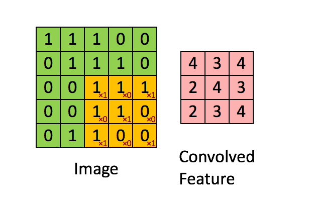
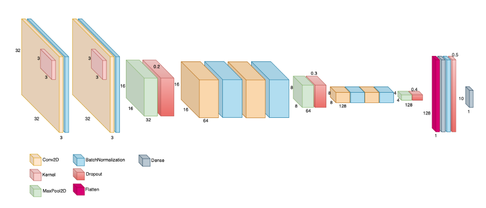
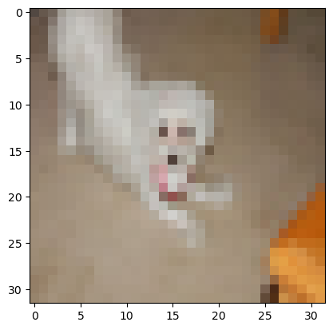
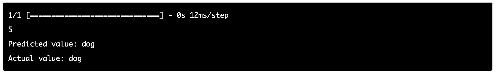

Deep learning
Deep learning is a technique within the field of artificial intelligence (AI). It involves teaching computers to process data the same way the human brain processes data. Deep learning models are capable of identifying intricate patterns in images, text, sounds, and other forms of data, enabling them to generate precise insights and predictions. Deep learning methods make it becomes possible to automate tasks that traditionally necessitate human intelligence, like describing images or converting audio files into written text (Amazon, 2023).
Artificial neural networks
The artificial neural network is a mathematical representation influenced by the structure of human neural networks. It consists of individual units known as neurons, interconnected to form intricate configurations. Each neuron possesses a weight value, which determines the network's classification capabilities. During the machine learning process, the training stage is employed to determine the appropriate weight values for these neurons, thereby creating an effective neural network with reliable classification abilities (Castro, 2023).
Deep learning example
The following examples were taken from my Machine Learning course, where I built a deep learning neural network, also known as convolutional neural network, used for image classification, utilizing the Keras library in Python.
Convolutional neural networks (CNNs) take an image as input and extract important features, such as edges or textures to be able to classify images. Such feature extraction is possible thanks to the convolution process.

The architecture used to build the CNN is shown below. It has a input layer that accepts images of 32x32 pixels (1024 input neurons), stacks several internal layers for feature extraction and optimization, and finally, it has a flat output layer of ten neurons. Each neuron is a class and it represents the probability of the image to belong to that class. Class values are ['airplane', 'automobile','bird','cat', 'deer', 'dog', 'frog', 'horse', 'ship', 'truck']

For example, given this image:

This was the prediction:

References
Amazon (2023) What Is Deep Learning?. Available from https://aws.amazon.com/what-is/deep-learning/ [Accessed 23 July 2023]
Castro, A. (2023) Introduction to artificial neural networks. Available from https://albertxcastro.github.io/03_machineLearning.html#ann [Accessed 23 July 2023]
Ellis, M. (2022) What Is Syntax? Learn the Meaning and Rules, With Examples. Available from https://www.grammarly.com/blog/syntax/ [Accessed 23 July 2023]
Jurafsky, D. & Martin, J. H. (2013) Speech and language processing. 2nd ed. Harlow: Pearson Education.
Korta, K., & Perry, J. (2020). Pragmatics. In E. N. Zalta (Ed.), The Stanford Encyclopedia of Philosophy (Spring 2020 Edition). Available from https://plato.stanford.edu/archives/spr2020/entries/pragmatics/ [Accessed 23 July 2023]